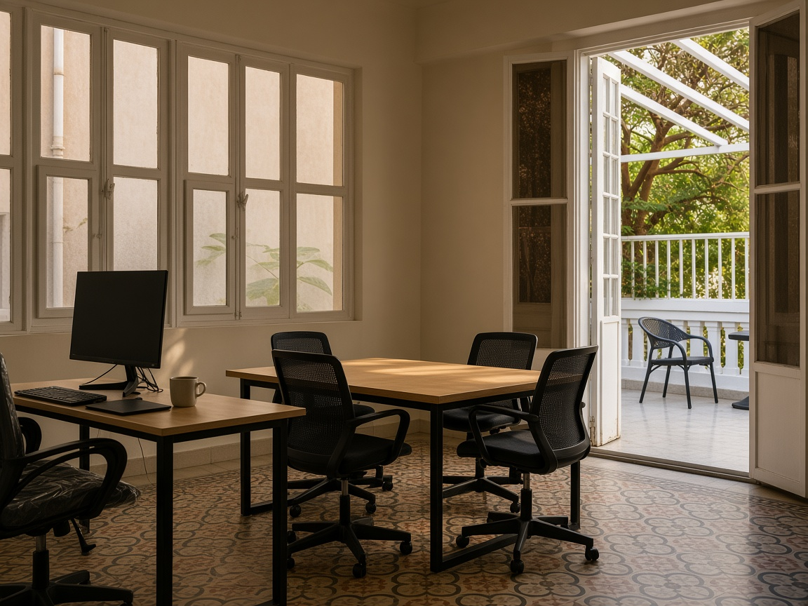
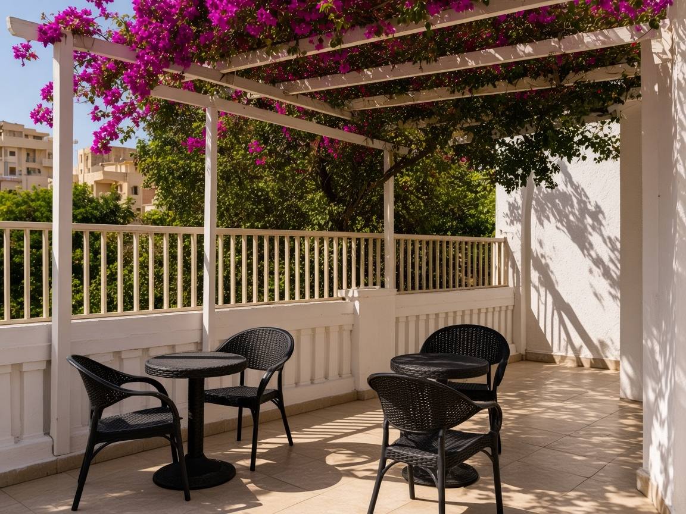
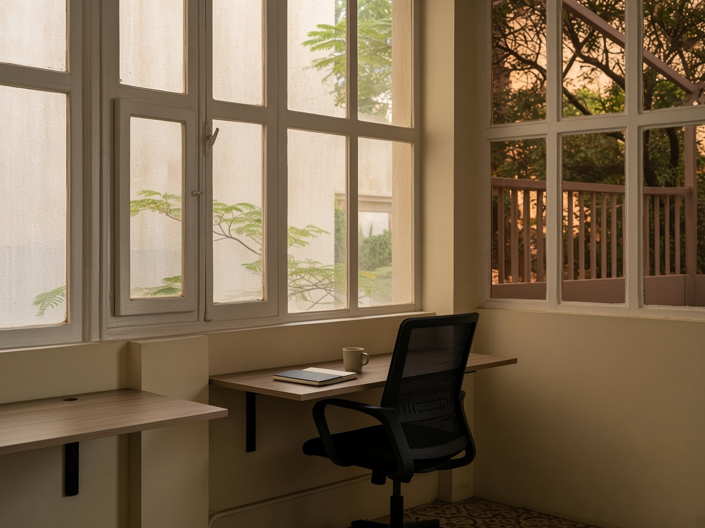
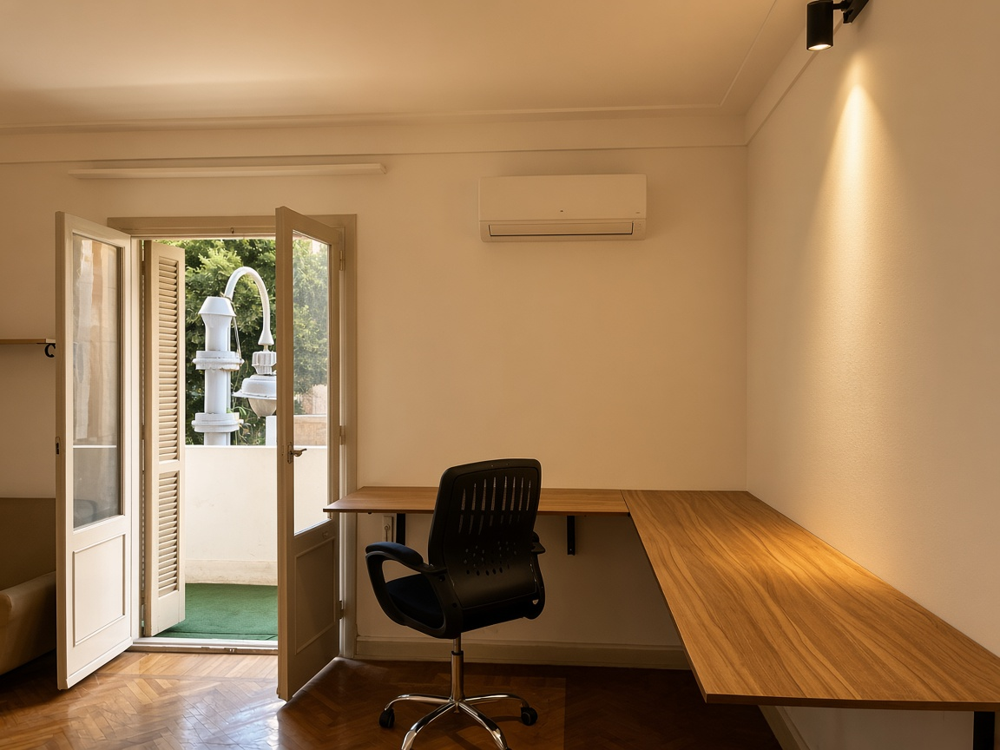
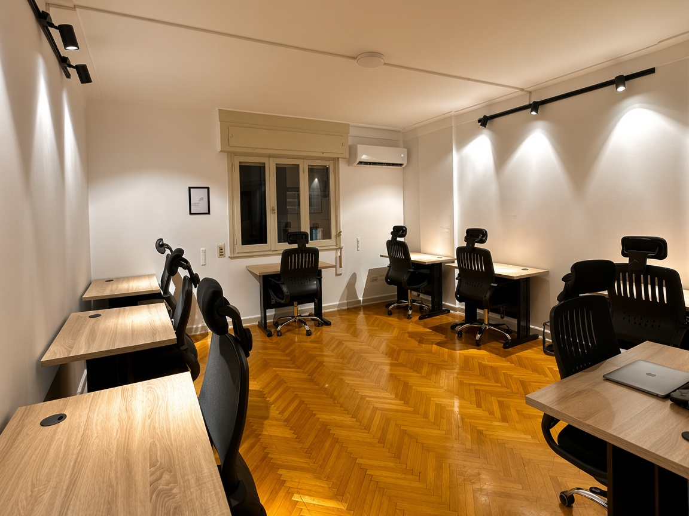

Designed from the real rooms
Campaign-style photographs of Kafr Abdo and Roushdy. Same furniture, floors and light — restaged as the photography an iOS app would actually ship with.
Campaign-style photographs of Kafr Abdo and Roushdy. Same furniture, floors and light — restaged as the photography an iOS app would actually ship with.




